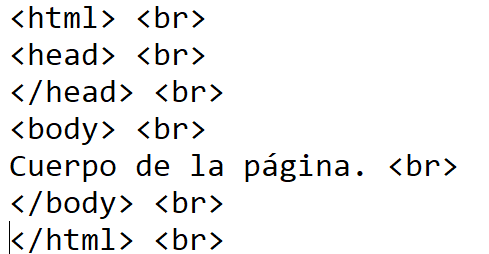
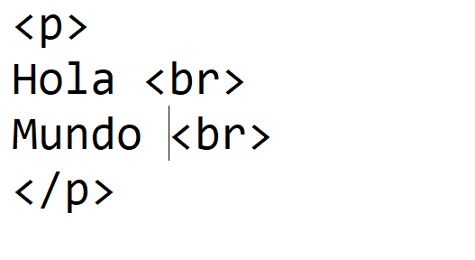
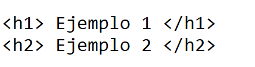
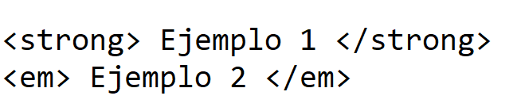
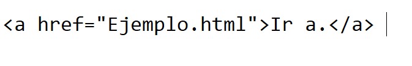
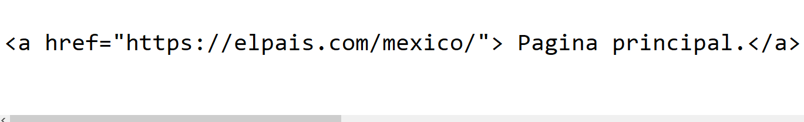

Tutorial de HTML
- ¿Que es?
- Parrafos y saltos de linea en HTML
- Titulos en HTML
- Enfasis en HTML
- Hipervinculos a otra pagina del mismo sitio
- Hipervinculos a una pagina de internet
- ¿Que es HTML?
- Es el lenguaje que se emplea para el desarrollo de páginas de internet.
Este lenguaje está constituido de elementos que el navegador interpreta
y las despliega en la pantalla de acuerdo a su objetivo.
Hay elementos para disponer imágenes sobre una página, hipervínculos
que nos permiten dirigirnos a otra página, listas, tablas para tabular
datos.
- Estructura interna
- Las instrucciones HTML están encerradas entre los caracteres: "< >".
Muchos elementos HTML requieren una marca de comienzo y otra de
finalización. Todo aquello que está fuera de las marcas del lenguaje se
imprime en la pantalla (dentro del navegador).
- Ejemplo
- 
Ir arriba
- Parrafos en HTML
- El elemento p (párrafo) es el apropiado para distribuir el texto en párrafos.
Sus etiquetas son: <"p"> y <"/p"> (la de cierre es opcional). Crea una caja: en bloque.
- Salto de linea
- El elemento HTML line break <"br"> produce un salto de línea en el texto (retorno de carro).
Es útil para escribir un poema o una dirección, donde la división de las líneas es significante
- Ejemplo
- 
Ir arriba
- Titulos en HTML
- Otros elementos HTML muy utilizados son para indicar los títulos, para esto contamos con
los elementos: <"h1"> <"h2"> <"h3"> <"h4"> <"h5"> <"h6">, el título de mayor nivel es <"h1">, es decir el que tienen una fuente mayor (veremos que es el
navegador el responsable de definir el tamaño de la fuente, más adelante podrá ver que uno
puede modificar la fuente, tamaño, color etc.)
- Ejemplo
- 
Ir arriba
- Enfasis en HTML
- Enfatizar algo significa realzar la importancia de una cosa, por ejemplo una
palabra o conjunto de palabras.
Así como tenemos seis niveles de títulos para enfatizar un bloque contamos con
dos elementos que son <"em"> <"strong">, El elemento de mayor fuerza de énfasis es strong y le sigue em
La mayoría de los navegadores muestran el texto enfatizado con strong con un
texto en negrita y para el elemento em utilizan letra itálica.
- Ejemplo
- 
Ir arriba
- Hipervinculos a otra pagina del mismo sitio
- El elemento más importante que tiene una página de internet es el hipervínculo, estos nos permiten cargar otra
página en el navegador.
Esto es lo que hace diferente la página de un libro con la página de un sitio en internet. Normalmente un libro lo
recorremos en forma secuencial, pero un sitio de internet podemos disponer estos enlaces entre un conjunto de
páginas y luego tener distintas alternativas de recorrido.
Normalmente un navegador al encontrar esta marca muestra un texto subrayado, y al hacer clic con el mouse
sobre éste el navegador carga la página indicada por dicho hipervínculo.
- Ejemplo
- 
Ir arriba
- Hipervinculos a una pagina de internet
- Los enlaces o hipervínculos, también llamados hipertextos son los textos o los objetos sobre los
que podemos hacer clic para que nos lleven a otra parte del documento, a otra página web en el mismo
sitio o a otra página de Internet, entre otras funciones.
- Ejemplo
- 
Ir arriba